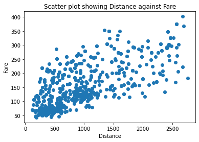

# import required functionality for this chapter
from pathlib import Path
import pandas as pd
import numpy as np
from sklearn.linear_model import LinearRegression
from sklearn.model_selection import train_test_split
from sklearn.preprocessing import StandardScaler
import statsmodels.formula.api as sm
import matplotlib.pylab as plt
import seaborn as sns
from dmba import regressionSummary, exhaustive_search
from dmba import backward_elimination, forward_selection, stepwise_selection
from dmba import adjusted_r2_score, AIC_score #, BIC_score
%matplotlib inlineChapter 6: Multiple Linear Regression - Solution
- 2019-2020 Galit Shmueli, Peter C. Bruce, Peter Gedeck
Data Mining for Business Analytics: Concepts, Techniques, and Applications in Python (First Edition) Galit Shmueli, Peter C. Bruce, Peter Gedeck, and Nitin R. Patel. 2019.
Date: 2020-03-08
Python Version: 3.8.2 Jupyter Notebook Version: 5.6.1
Packages: - dmba: 0.0.12 - matplotlib: 3.2.0 - numpy: 1.18.1 - pandas: 1.0.1 - seaborn: 0.10.0 - scikit-learn: 0.22.2 - statsmodels: 0.11.1
The assistance from Mr. Kuber Deokar and Ms. Anuja Kulkarni in preparing these solutions is gratefully acknowledged.
# Working directory:
#
# We assume that data are kept in the same directory as the notebook. If you keep your
# data in a different folder, replace the argument of the `Path`
DATA = Path('.')
# and then load data using
#
# pd.read_csv(DATA / ‘filename.csv’)Problem 6.1 Predicting Bostom Housing Prices
The file BostonHousing.csv contains information collected by the US Bureau of the Census concerning housing in the area of Boston, Massachusetts. The dataset includes information on 506 census housing tracts in the Boston area. The goal is to predict the median house price in new tracts based on information such as crime rate, pollution, and number of rooms. The dataset contains 13 predictors, and the outcome variable is the median house price (MEDV). Table 6.11 describes each of the predictors and the outcome variable.

# load the data
housing_df = pd.read_csv(DATA / 'BostonHousing.csv')
# display column/variable names
columns = list(housing_df.columns)
print("Variables in the data are: ")
print(columns)
# review first 5 records in the data
print("\nFirst 5 records in the data are:")
housing_df.head()Variables in the data are:
['CRIM', 'ZN', 'INDUS', 'CHAS', 'NOX', 'RM', 'AGE', 'DIS', 'RAD', 'TAX', 'PTRATIO', 'LSTAT', 'MEDV', 'CAT. MEDV']
First 5 records in the data are:| CRIM | ZN | INDUS | CHAS | NOX | RM | AGE | DIS | RAD | TAX | PTRATIO | LSTAT | MEDV | CAT. MEDV | |
|---|---|---|---|---|---|---|---|---|---|---|---|---|---|---|
| 0 | 0.00632 | 18.0 | 2.31 | 0 | 0.538 | 6.575 | 65.2 | 4.0900 | 1 | 296 | 15.3 | 4.98 | 24.0 | 0 |
| 1 | 0.02731 | 0.0 | 7.07 | 0 | 0.469 | 6.421 | 78.9 | 4.9671 | 2 | 242 | 17.8 | 9.14 | 21.6 | 0 |
| 2 | 0.02729 | 0.0 | 7.07 | 0 | 0.469 | 7.185 | 61.1 | 4.9671 | 2 | 242 | 17.8 | 4.03 | 34.7 | 1 |
| 3 | 0.03237 | 0.0 | 2.18 | 0 | 0.458 | 6.998 | 45.8 | 6.0622 | 3 | 222 | 18.7 | 2.94 | 33.4 | 1 |
| 4 | 0.06905 | 0.0 | 2.18 | 0 | 0.458 | 7.147 | 54.2 | 6.0622 | 3 | 222 | 18.7 | 5.33 | 36.2 | 1 |
6.1.a. Why should the data be partitioned into training and validation sets? What will the training set be used for? What will the validation set be used for?
Answer: 1. The data should be partitioned into training and validation sets because we need two sets of data: one to build the model that depicts the relationship between the predictor variables and the predicted variable, and another to validate the model’s predictive accuracy. 2. The training data set is used to build the model. The algorithm ‘discovers’ the model using this data set. 3. The validation data is used to ‘validate’ the model. In this process, the model (built using the training data set) is used to make predictions with the validation data - data that were not used to fit the model. In this way we get an unbiased estimate of how well the model performs. We compute measures of ‘error’, which reflect the prediction accuracy.
6.1.b. Fit a multiple linear regression model to the median house price (MEDV) as a function of CRIM, CHAS, and RM. Write the equation for predicting the median house price from the predictors in the model.
Answer:
# select columns for regression analysis
housing_df.columns
outcome = 'MEDV'
predictors = ['CRIM', 'CHAS', 'RM']
x = housing_df[predictors]
y = housing_df[outcome]# fit the regression model y on x
housing_lm = LinearRegression()
housing_lm.fit(x,y)
# regression model, print coefficients
print('intercept ', housing_lm.intercept_)
print(pd.DataFrame({'Predictor': x.columns, 'coefficient': housing_lm.coef_}))intercept -28.810682506359125
Predictor coefficient
0 CRIM -0.260724
1 CHAS 3.763037
2 RM 8.2781806.1.c. Using the estimated regression model, what median house price is predicted for a tract in the Boston area that does not bound the Charles River, has a crime rate of 0.1, and where the average number of rooms per house is 6?
Answer:
new_df = pd.DataFrame(
[[0.1, 0, 6]],
columns=['CRIM', 'CHAS', 'RM'])
new_df| CRIM | CHAS | RM | |
|---|---|---|---|
| 0 | 0.1 | 0 | 6 |
housing_lm_pred = housing_lm.predict(new_df)
print('Predicted value for median house price based on the model built using dataset is:', housing_lm_pred)Predicted value for median house price based on the model built using dataset is: [20.83232392]The predicted value of median house price based on the model built using training dataset is $20832.32.
6.1.d.i. Reduce the number of predictors: Which predictors are likely to be measuring the same thing among the 13 predictors? Discuss the relationships among INDUS, NOX, and TAX.
Answer: There are several variables that measure levels of industrialization, which are expected to be positively correlated. These include INDUS, NOX (pollution), and TAX.
We expect a positive relationship between NOX (nitric oxides concentration, a pollutant), INDUS (proportion of non-retail business acres per town) and TAX (tax rate), because areas that have a high proportion of non-retail businesses tend to have higher taxes and more pollution.
6.1.d.ii. Compute the correlation table for the 12 numerical predictors and search for highly correlated pairs. These have potential redundancy and can cause multicollinearity. Choose which ones to remove based on this table.
Answer:
# variables in the data
housing_df.columnsIndex(['CRIM', 'ZN', 'INDUS', 'CHAS', 'NOX', 'RM', 'AGE', 'DIS', 'RAD', 'TAX',
'PTRATIO', 'LSTAT', 'MEDV', 'CAT. MEDV'],
dtype='object')# Create a new dataframe with predictors
predictors_df = housing_df
columns = list(housing_df.columns)
columns.remove('CHAS')
columns.remove('MEDV')
columns.remove('CAT. MEDV')
predictors_df = predictors_df[columns]
predictors_df.columnsIndex(['CRIM', 'ZN', 'INDUS', 'NOX', 'RM', 'AGE', 'DIS', 'RAD', 'TAX',
'PTRATIO', 'LSTAT'],
dtype='object')corr = predictors_df.corr()
# corr.style.background_gradient()
_ = sns.heatmap(corr, xticklabels=corr.columns, yticklabels=corr.columns, vmin=-1, vmax=1,
cmap="RdBu")# correlation table
corr| CRIM | ZN | INDUS | NOX | RM | AGE | DIS | RAD | TAX | PTRATIO | LSTAT | |
|---|---|---|---|---|---|---|---|---|---|---|---|
| CRIM | 1.000000 | -0.200469 | 0.406583 | 0.420972 | -0.219247 | 0.352734 | -0.379670 | 0.625505 | 0.582764 | 0.289946 | 0.455621 |
| ZN | -0.200469 | 1.000000 | -0.533828 | -0.516604 | 0.311991 | -0.569537 | 0.664408 | -0.311948 | -0.314563 | -0.391679 | -0.412995 |
| INDUS | 0.406583 | -0.533828 | 1.000000 | 0.763651 | -0.391676 | 0.644779 | -0.708027 | 0.595129 | 0.720760 | 0.383248 | 0.603800 |
| NOX | 0.420972 | -0.516604 | 0.763651 | 1.000000 | -0.302188 | 0.731470 | -0.769230 | 0.611441 | 0.668023 | 0.188933 | 0.590879 |
| RM | -0.219247 | 0.311991 | -0.391676 | -0.302188 | 1.000000 | -0.240265 | 0.205246 | -0.209847 | -0.292048 | -0.355501 | -0.613808 |
| AGE | 0.352734 | -0.569537 | 0.644779 | 0.731470 | -0.240265 | 1.000000 | -0.747881 | 0.456022 | 0.506456 | 0.261515 | 0.602339 |
| DIS | -0.379670 | 0.664408 | -0.708027 | -0.769230 | 0.205246 | -0.747881 | 1.000000 | -0.494588 | -0.534432 | -0.232471 | -0.496996 |
| RAD | 0.625505 | -0.311948 | 0.595129 | 0.611441 | -0.209847 | 0.456022 | -0.494588 | 1.000000 | 0.910228 | 0.464741 | 0.488676 |
| TAX | 0.582764 | -0.314563 | 0.720760 | 0.668023 | -0.292048 | 0.506456 | -0.534432 | 0.910228 | 1.000000 | 0.460853 | 0.543993 |
| PTRATIO | 0.289946 | -0.391679 | 0.383248 | 0.188933 | -0.355501 | 0.261515 | -0.232471 | 0.464741 | 0.460853 | 1.000000 | 0.374044 |
| LSTAT | 0.455621 | -0.412995 | 0.603800 | 0.590879 | -0.613808 | 0.602339 | -0.496996 | 0.488676 | 0.543993 | 0.374044 | 1.000000 |
If the correlation between variables if greater than 0.7 we can say that the two variables are highly correlated. From the above table, the pairs of highly correlated variables are:
NOX and INDUS: Correlation coefficient = 0.763651
TAX and INDUS: Correlation coefficient = 0.72076
AGE and NOX: Correlation coefficient = 0.73147
DIS and NOX: Correlation coefficient = -0.76923
DIS and AGE: Correlation coefficient = -0.747881
TAX and RAD: Correlation coefficient = 0.910228
According to the correlation table, we might be able to remove some variables that do not add much information to others that we keep. We might remove INDUS, AGE and TAX.
6.1.d.iii. Use stepwise regression with the three options (backward, forward, both) to reduce the remaining predictors as follows: Run stepwise on the training set. Choose the top model from each stepwise run. Then use each of these models separately to predict the validation set. Compare RMSE, MAPE, and mean error, as well as lift charts. Finally, describe the best model.
Answer:
# partition the data into training (60%) and validation (40%) sets
predictors = ['CRIM', 'ZN', 'INDUS', 'CHAS', 'NOX', 'RM', 'AGE', 'DIS', 'RAD', 'TAX', 'PTRATIO', 'LSTAT']
outcome = 'MEDV'
# partition the data
X = pd.get_dummies(housing_df[predictors], drop_first=True)
y = housing_df[outcome]
train_X, valid_X, train_y, valid_y = train_test_split(X, y, test_size=0.4, random_state=1)
print('Training set:', train_X.shape, 'Validation set:', valid_X.shape)Training set: (303, 12) Validation set: (203, 12)NOTE: There is currently no support in scikit-learn or statsmodels for stepwise regression. It is however straightforward to implement such an approach in a few lines of code using the dmba implementation.
# backward elimination
def train_model(variables):
model = LinearRegression()
model.fit(train_X[variables], train_y)
return model
def score_model(model, variables):
return AIC_score(train_y, model.predict(train_X[variables]), model)
best_model, best_variables = backward_elimination(train_X.columns, train_model, score_model, verbose=True)
print("Best Subset:", best_variables)Variables: CRIM, ZN, INDUS, CHAS, NOX, RM, AGE, DIS, RAD, TAX, PTRATIO, LSTAT
Start: score=1807.23
Step: score=1805.30, remove AGE
Step: score=1803.57, remove INDUS
Step: score=1803.57, remove None
Best Subset: ['CRIM', 'ZN', 'CHAS', 'NOX', 'RM', 'DIS', 'RAD', 'TAX', 'PTRATIO', 'LSTAT']# forward selection
# The initial model is the constant model - this requires special handling in train_model and score_model
def train_model(variables):
if len(variables) == 0:
return None
model = LinearRegression()
model.fit(train_X[variables], train_y)
return model
def score_model(model, variables):
if len(variables) == 0:
return AIC_score(train_y, [train_y.mean()] * len(train_y), model, df=1)
return AIC_score(train_y, model.predict(train_X[variables]), model)
best_model, best_variables = forward_selection(train_X.columns, train_model, score_model, verbose=True)
print("Best Subset:", best_variables)Variables: CRIM, ZN, INDUS, CHAS, NOX, RM, AGE, DIS, RAD, TAX, PTRATIO, LSTAT
Start: score=2191.75, constant
Step: score=1934.91, add LSTAT
Step: score=1874.18, add RM
Step: score=1842.54, add PTRATIO
Step: score=1837.69, add CHAS
Step: score=1835.00, add NOX
Step: score=1817.90, add DIS
Step: score=1811.82, add ZN
Step: score=1810.16, add CRIM
Step: score=1808.01, add RAD
Step: score=1803.57, add TAX
Step: score=1803.57, add None
Best Subset: ['LSTAT', 'RM', 'PTRATIO', 'CHAS', 'NOX', 'DIS', 'ZN', 'CRIM', 'RAD', 'TAX']# stepwise (both) method
best_model, best_variables = stepwise_selection(train_X.columns, train_model, score_model, verbose=True)
print("Best Subset:", best_variables)Variables: CRIM, ZN, INDUS, CHAS, NOX, RM, AGE, DIS, RAD, TAX, PTRATIO, LSTAT
Start: score=2191.75, constant
Step: score=1934.91, add LSTAT
Step: score=1874.18, add RM
Step: score=1842.54, add PTRATIO
Step: score=1837.69, add CHAS
Step: score=1835.00, add NOX
Step: score=1817.90, add DIS
Step: score=1811.82, add ZN
Step: score=1810.16, add CRIM
Step: score=1808.01, add RAD
Step: score=1803.57, add TAX
Step: score=1803.57, unchanged None
Best Subset: ['LSTAT', 'RM', 'PTRATIO', 'CHAS', 'NOX', 'DIS', 'ZN', 'CRIM', 'RAD', 'TAX']Above we see that all three subset selection methods gave the same best subset/model: Each model is designed using the following 10 variables: LSTAT, RM, PTRATIO, CHAS, NOX, DIS, ZN, CRIM, RAD, TAX.
# fit the model with best subset variables
outcome = 'MEDV'
predictors = ['LSTAT', 'RM', 'PTRATIO', 'CHAS', 'NOX', 'DIS', 'ZN', 'CRIM', 'RAD', 'TAX']
X = train_X[predictors]
y = train_y
# fit the regression model y on X
house_lm = LinearRegression()
house_lm.fit(X,y)
# regression model, print coefficients
print('intercept', house_lm.intercept_)
print(pd.DataFrame({'Predictor': X.columns, 'coefficient': house_lm.coef_}))
# print performance measures (training set)
print("\nModel performance on training data:")
regressionSummary(train_y, house_lm.predict(train_X[predictors]))
# predict prices in validation set, print first few predicted/actual values and residuals
house_lm_pred = house_lm.predict(valid_X[predictors])
result = pd.DataFrame({'Predicted': house_lm_pred, 'Actual': valid_y, 'Residual': valid_y - house_lm_pred})
# print performance measures (validation set)
print("\nModel performance on validation data:")
regressionSummary(valid_y, house_lm_pred)intercept 38.95615649828216
Predictor coefficient
0 LSTAT -0.514444
1 RM 3.480964
2 PTRATIO -0.804964
3 CHAS 2.359986
4 NOX -17.866926
5 DIS -1.438596
6 ZN 0.066221
7 CRIM -0.114137
8 RAD 0.262455
9 TAX -0.011166
Model performance on training data:
Regression statistics
Mean Error (ME) : -0.0000
Root Mean Squared Error (RMSE) : 4.5615
Mean Absolute Error (MAE) : 3.1662
Mean Percentage Error (MPE) : -3.4181
Mean Absolute Percentage Error (MAPE) : 16.4898
Model performance on validation data:
Regression statistics
Mean Error (ME) : -0.0393
Root Mean Squared Error (RMSE) : 5.0771
Mean Absolute Error (MAE) : 3.5746
Mean Percentage Error (MPE) : -5.1561
Mean Absolute Percentage Error (MAPE) : 16.9733Problem 6.2 Predicting Software Reselling Profits.
Tayko Software is a software catalog firm that sells games and educational software. It started out as a software manufacturer and then added third-party titles to its offerings. It recently revised its collection of items in a new catalog, which it mailed out to its customers. This mailing yielded 2000 purchases. Based on these data, Tayko wants to devise a model for predicting the spending amount that a purchasing customer will yield. The file Tayko.csv contains information on 2000 purchases. Table 6.12 describes the variables to be used in the problem (the Excel file contains additional variables).

# load the data
tayko_df = pd.read_csv(DATA / 'Tayko.csv')
# check data dimension
tayko_df.shape(2000, 25)# check variable names
list(tayko_df.columns)['sequence_number',
'US',
'source_a',
'source_c',
'source_b',
'source_d',
'source_e',
'source_m',
'source_o',
'source_h',
'source_r',
'source_s',
'source_t',
'source_u',
'source_p',
'source_x',
'source_w',
'Freq',
'last_update_days_ago',
'1st_update_days_ago',
'Web order',
'Gender=male',
'Address_is_res',
'Purchase',
'Spending']# modify column names
tayko_df.columns = [c.replace(' ', '_').replace('=', '_') for c in tayko_df.columns]# review first few record
tayko_df.head()| sequence_number | US | source_a | source_c | source_b | source_d | source_e | source_m | source_o | source_h | ... | source_x | source_w | Freq | last_update_days_ago | 1st_update_days_ago | Web_order | Gender_male | Address_is_res | Purchase | Spending | |
|---|---|---|---|---|---|---|---|---|---|---|---|---|---|---|---|---|---|---|---|---|---|
| 0 | 1 | 1 | 0 | 0 | 1 | 0 | 0 | 0 | 0 | 0 | ... | 0 | 0 | 2 | 3662 | 3662 | 1 | 0 | 1 | 1 | 128 |
| 1 | 2 | 1 | 0 | 0 | 0 | 0 | 1 | 0 | 0 | 0 | ... | 0 | 0 | 0 | 2900 | 2900 | 1 | 1 | 0 | 0 | 0 |
| 2 | 3 | 1 | 0 | 0 | 0 | 0 | 0 | 0 | 0 | 0 | ... | 0 | 0 | 2 | 3883 | 3914 | 0 | 0 | 0 | 1 | 127 |
| 3 | 4 | 1 | 0 | 1 | 0 | 0 | 0 | 0 | 0 | 0 | ... | 0 | 0 | 1 | 829 | 829 | 0 | 1 | 0 | 0 | 0 |
| 4 | 5 | 1 | 0 | 1 | 0 | 0 | 0 | 0 | 0 | 0 | ... | 0 | 0 | 1 | 869 | 869 | 0 | 0 | 0 | 0 | 0 |
5 rows × 25 columns
# check data types of variables in the data
tayko_df.dtypessequence_number int64
US int64
source_a int64
source_c int64
source_b int64
source_d int64
source_e int64
source_m int64
source_o int64
source_h int64
source_r int64
source_s int64
source_t int64
source_u int64
source_p int64
source_x int64
source_w int64
Freq int64
last_update_days_ago int64
1st_update_days_ago int64
Web_order int64
Gender_male int64
Address_is_res int64
Purchase int64
Spending int64
dtype: object6.2.a Explore the spending amount by creating a pivot table for the categorical variables and computing the average and standard deviation of spending in each category.
Answer:
# select only required variables
selected_var = ['US', 'Freq', 'last_update_days_ago', 'Web_order', 'Gender_male', 'Address_is_res', 'Spending']
tayko_df = tayko_df[selected_var]
list(selected_var)['US',
'Freq',
'last_update_days_ago',
'Web_order',
'Gender_male',
'Address_is_res',
'Spending']# pivot table: spending by gender
pd.pivot_table(tayko_df, index= 'Gender_male', values= "Spending",
aggfunc= [np.mean, np.std])| mean | std | |
|---|---|---|
| Spending | Spending | |
| Gender_male | ||
| 0 | 107.339642 | 190.83233 |
| 1 | 98.350810 | 183.02006 |
# pivot table: spending by web order
pd.pivot_table(tayko_df, index= 'Web_order', values= "Spending",
aggfunc= [np.mean, np.std])| mean | std | |
|---|---|---|
| Spending | Spending | |
| Web_order | ||
| 0 | 82.902439 | 173.417088 |
| 1 | 129.199531 | 200.463840 |
# pivot table: spending by adress
pd.pivot_table(tayko_df, index= 'Address_is_res', values= "Spending",
aggfunc= [np.mean, np.std])| mean | std | |
|---|---|---|
| Spending | Spending | |
| Address_is_res | ||
| 0 | 105.306162 | 199.521159 |
| 1 | 93.174208 | 132.204281 |
# pivot table: spending by whether it is US address
pd.pivot_table(tayko_df, index= 'US', values= "Spending",
aggfunc= [np.mean, np.std])| mean | std | |
|---|---|---|
| Spending | Spending | |
| US | ||
| 0 | 101.216524 | 174.844401 |
| 1 | 102.924803 | 189.275664 |
6.2.b. Explore the relationship between spending and each of the two continuous predictors by creating two scatterplots (Spending vs. Freq, and Spending vs. last_update_days_ago. Does there seem to be a linear relationship?
Answer:
# plot of spending against frequency
plt.scatter(tayko_df.Freq, tayko_df.Spending)
plt.title('Scatter plot showing Spending against Frequency')
plt.ylabel('Spending')
plt.xlabel('Frequency')
plt.show()The overall relationship between Spending and Freq does not appear to be linear. However, there do appear to be two groups of points (Spending < 800 and Spending > 800), and within each group there appears to be a linear relationship between SPENDING and FREQ.
# plot Spending against last_update_days_ago
plt.scatter(tayko_df.last_update_days_ago, tayko_df.Spending)
plt.title('Scatter plot showing Spending against last_update_days_ago')
plt.ylabel('Spending')
plt.xlabel('last_update_days_ago')
plt.show()There appears to be no relationship between Spending and Last_Update but two grous of points similar to what we seen in case of Spending and Frequency above.
6.2.c. To fit a predictive model for spending:
6.2.c.i. Partition the 2000 records into training and validation sets.
Answer:
# predictors and outcome
predictors = ['US', 'Freq', 'last_update_days_ago', 'Web_order', 'Gender_male', 'Address_is_res']
outcome = 'Spending'
X = tayko_df[predictors]
y = tayko_df[outcome]
# partition data
train_X, valid_X, train_y, valid_y = train_test_split(X, y, test_size = 0.4, random_state = 1)
print('Training set:', train_X.shape, 'Validation set:', valid_X.shape)Training set: (1200, 6) Validation set: (800, 6)6.2.c.ii. Run a multiple linear regression model for Spending vs. all six predictors. Give the estimated predictive equation.
Answer:
# fit the regression model
tayko_lm = LinearRegression()
tayko_lm.fit(train_X, train_y)
# print coefficients
print('Intercept', tayko_lm.intercept_)
print(pd.DataFrame({'Predictor': X.columns, 'coefficient': tayko_lm.coef_}))Intercept 10.17629741458822
Predictor coefficient
0 US -4.620293
1 Freq 91.274450
2 last_update_days_ago -0.010374
3 Web_order 18.628731
4 Gender_male -9.111366
5 Address_is_res -75.815354The Regression equation is:
Spending = 10.176297 + (-4.620293 * US) + (91.274450 * Freq) + (-0.010347 * last_update_days_ago) + (18.628731 * Web_order) + (-9.111366 * Gender_male) + (-75.815354 * Address_is_res)
6.2.c.iii. Based on this model, what type of purchaser is most likely to spend a large amount of money?
Answer:
A purchaser with frequent catalog transactions in the last year and who has purchased by Web order at least once. This is based on the signs of the coefficients and on their statistical significance (low p-values).
# here we use sm.ols method in statsmodels which provides more information (P-values etc.) on model fit
# run a linear regression of Spending on the predictors in the training set
train_df = train_X.join(train_y)
predictors = train_X.columns
formula = 'Spending ~ ' + ' + '.join(predictors)
tayko_lm = sm.ols(formula=formula, data=train_df).fit()
print(tayko_lm.summary()) OLS Regression Results
==============================================================================
Dep. Variable: Spending R-squared: 0.525
Model: OLS Adj. R-squared: 0.522
Method: Least Squares F-statistic: 219.3
Date: Sun, 08 Mar 2020 Prob (F-statistic): 1.26e-188
Time: 20:19:30 Log-Likelihood: -7506.3
No. Observations: 1200 AIC: 1.503e+04
Df Residuals: 1193 BIC: 1.506e+04
Df Model: 6
Covariance Type: nonrobust
========================================================================================
coef std err t P>|t| [0.025 0.975]
----------------------------------------------------------------------------------------
Intercept 10.1763 13.543 0.751 0.453 -16.395 36.747
US -4.6203 9.636 -0.479 0.632 -23.526 14.285
Freq 91.2744 2.809 32.490 0.000 85.763 96.786
last_update_days_ago -0.0104 0.003 -3.029 0.003 -0.017 -0.004
Web_order 18.6287 7.526 2.475 0.013 3.863 33.394
Gender_male -9.1114 7.318 -1.245 0.213 -23.468 5.245
Address_is_res -75.8154 9.162 -8.275 0.000 -93.790 -57.841
==============================================================================
Omnibus: 956.068 Durbin-Watson: 1.989
Prob(Omnibus): 0.000 Jarque-Bera (JB): 32247.650
Skew: 3.402 Prob(JB): 0.00
Kurtosis: 27.468 Cond. No. 1.01e+04
==============================================================================
Warnings:
[1] Standard Errors assume that the covariance matrix of the errors is correctly specified.
[2] The condition number is large, 1.01e+04. This might indicate that there are
strong multicollinearity or other numerical problems.6.2.c.iv. If we used backward elimination to reduce the number of predictors, which predictor would be dropped first from the model?
Answer:
Based on the above model, US has the highest p-value. Therefore backward elimination would drop “US” first from the model.
6.2.c.v. Show how the prediction and the prediction error are computed for the first purchase in the validation set.
Answer:
valid_df = valid_X.join(valid_y)
first_obs_valid = valid_df.head(1)
print(first_obs_valid) US Freq last_update_days_ago Web_order Gender_male Address_is_res \
674 1 2 1346 0 1 1
Spending
674 0 Here, we need to calculate the predicted value for the first observation of validation set. The values corresponding to the first observation of validation set are:
US = 1; Freq = 1; last_update_days_ago = 869; Web_order = 0; Gender_male = 0; Address_is_res = 0Spending = 10.176297+(-4.620293*US)+(91.274450*Freq)+(-0.010347*last_update_days_ago)+(18.628731*Web_order)+ (-9.111366*Gender_male)+(-75.815354*Address_is_res)
print(Spending)87.838911# prediction error. subtract 0 from predicted value as response (Spending) value for the first record in the validation data
# is zero.
print('Prediction Error = ',Spending - 0)Prediction Error = 87.8389116.2.c.vi. Evaluate the predictive accuracy of the model by examining its performance on the validation set.
Answer:
The Average error is 7 dollars, with an RMSE of 137.7 dollars. This level of error is practically small given that values of spending in the data are in the range 0 - 1500 dollars. We also see that the validation set performance is approximately similar to the training set performance, indicating no overfitting.
# print performance measures (training set)
print("\nModel performance on training data:")
regressionSummary(train_y, tayko_lm.predict(train_X[predictors]))
# predict prices in validation set, print first few predicted/actual values and residuals
# we go back to the model we fitted using sklearn
tayko_lm_pred = tayko_lm.predict(valid_X[predictors])
result = pd.DataFrame({'Predicted': tayko_lm_pred, 'Actual': valid_y, 'Residual': valid_y - tayko_lm_pred})
print("First few predicted/actual values and residuals:\n")
print(result.head(5))
# print performance measures (validation set)
print("\nModel performance on validation data:")
regressionSummary(valid_y, tayko_lm_pred)
Model performance on training data:
Regression statistics
Mean Error (ME) : 0.0000
Root Mean Squared Error (RMSE) : 125.9999
Mean Absolute Error (MAE) : 79.4772
First few predicted/actual values and residuals:
Predicted Actual Residual
674 89.214915 0 -89.214915
1699 202.231362 184 -18.231362
1282 49.159303 0 -49.159303
1315 824.841659 1289 464.158341
1210 0.121196 0 -0.121196
Model performance on validation data:
Regression statistics
Mean Error (ME) : 7.1933
Root Mean Squared Error (RMSE) : 136.7397
Mean Absolute Error (MAE) : 83.60106.2.c.vii. Create a histogram of the model residuals. Do they appear to follow a normal distribution? How does this affect the predictive performance of the model?
Answer:
The histogram of residuals doesn’t appear to be normal. However, this is not a great handicap – the assumption of normally distributed residuals is required for classically-derived confidence intervals, but not so much in data mining, where redictive accuracy is assessed in another way (evaluating performance on the validation data).
# compute and plot the residuals for validation data
all_residuals = valid_y - tayko_lm_pred
pd.DataFrame({'Residuals': all_residuals}).hist(bins=30)
plt.show()Problem 6.3 Predicting Airfare on New Routes.
The following problem takes place in the United States in the late 1990s, when many major US cities were facing issues with airport congestion, partly as a result of the 1978 deregulation of airlines. Both fares and routes were freed from regulation, and low-fare carriers such as Southwest (SW) began competing on existing routes and starting nonstop service on routes that previously lacked it. Building completely new airports is generally not feasible, but sometimes decommissioned military bases or smaller municipal airports can be reconfgured as regional or larger commercial airports. There are numerous players and interests involved in the issue (airlines, city, state and federal authorities, civic groups, the military, airport operators), and an aviation consulting firm is seeking advisory contracts with these players. The frm needs predictive models to support its consulting service. One thing the frm might want to be able to predict is fares, in the event a new airport is brought into service. The frm starts with the fle Airfares.csv, which contains real data that were collected between Q3-1996 and Q2-1997. The variables in these data are listed in Table 6.13, and are believed to be important in predicting FARE. Some airport-to-airport data are available, but most data are at the city-to-city level. One question that will be of interest in the analysis is the effect that the presence or absence of Southwest has on FARE.

# load the data and review
airfares_df = pd.read_csv(DATA / 'Airfares.csv')
# check data dimension
print('\ndimension\n',airfares_df.shape)
# view few records
print('\nfirst five record\n')
print(airfares_df.head())
# variable types
print('\nData Type')
airfares_df.dtypes
dimension
(638, 18)
first five record
S_CODE S_CITY E_CODE E_CITY COUPON NEW \
0 * Dallas/Fort Worth TX * Amarillo TX 1.00 3
1 * Atlanta GA * Baltimore/Wash Intl MD 1.06 3
2 * Boston MA * Baltimore/Wash Intl MD 1.06 3
3 ORD Chicago IL * Baltimore/Wash Intl MD 1.06 3
4 MDW Chicago IL * Baltimore/Wash Intl MD 1.06 3
VACATION SW HI S_INCOME E_INCOME S_POP E_POP SLOT \
0 No Yes 5291.99 28637.0 21112.0 3036732 205711 Free
1 No No 5419.16 26993.0 29838.0 3532657 7145897 Free
2 No No 9185.28 30124.0 29838.0 5787293 7145897 Free
3 No Yes 2657.35 29260.0 29838.0 7830332 7145897 Controlled
4 No Yes 2657.35 29260.0 29838.0 7830332 7145897 Free
GATE DISTANCE PAX FARE
0 Free 312 7864 64.11
1 Free 576 8820 174.47
2 Free 364 6452 207.76
3 Free 612 25144 85.47
4 Free 612 25144 85.47
Data TypeS_CODE object
S_CITY object
E_CODE object
E_CITY object
COUPON float64
NEW int64
VACATION object
SW object
HI float64
S_INCOME float64
E_INCOME float64
S_POP int64
E_POP int64
SLOT object
GATE object
DISTANCE int64
PAX int64
FARE float64
dtype: object# preprocess
# remove first four variables 'S_CODE', 'S_CITY', 'E_CODE', 'E_CITY'
selected_var = ['COUPON', 'NEW', 'VACATION', 'SW', 'HI', 'S_INCOME', 'E_INCOME', 'S_POP', 'E_POP', 'SLOT', 'GATE',
'DISTANCE', 'PAX', 'FARE']
airfares_df = airfares_df[selected_var]
airfares_df.dtypesCOUPON float64
NEW int64
VACATION object
SW object
HI float64
S_INCOME float64
E_INCOME float64
S_POP int64
E_POP int64
SLOT object
GATE object
DISTANCE int64
PAX int64
FARE float64
dtype: object6.3.a. Explore the numerical predictors and response (FARE) by creating a correlation table and examining some scatterplots between FARE and those predictors. What seems to be the best single predictor of FARE?
Answer:
# create a new dataframe with numerical predictors
predictors_df = airfares_df
columns = list(airfares_df.columns)
columns.remove('VACATION')
columns.remove('SW')
columns.remove('SLOT')
columns.remove('GATE')
predictors_df = predictors_df[columns]
predictors_df.columnsIndex(['COUPON', 'NEW', 'HI', 'S_INCOME', 'E_INCOME', 'S_POP', 'E_POP',
'DISTANCE', 'PAX', 'FARE'],
dtype='object')#correlation table
predictors_df.corr()
#corr.style.background_gradient()| COUPON | NEW | HI | S_INCOME | E_INCOME | S_POP | E_POP | DISTANCE | PAX | FARE | |
|---|---|---|---|---|---|---|---|---|---|---|
| COUPON | 1.000000 | 0.020223 | -0.347252 | -0.088403 | 0.046889 | -0.107763 | 0.094970 | 0.746805 | -0.336974 | 0.496537 |
| NEW | 0.020223 | 1.000000 | 0.054147 | 0.026597 | 0.113377 | -0.016672 | 0.058568 | 0.080965 | 0.010495 | 0.091730 |
| HI | -0.347252 | 0.054147 | 1.000000 | -0.027382 | 0.082393 | -0.172495 | -0.062456 | -0.312375 | -0.168961 | 0.025195 |
| S_INCOME | -0.088403 | 0.026597 | -0.027382 | 1.000000 | -0.138864 | 0.517187 | -0.272280 | 0.028153 | 0.138197 | 0.209135 |
| E_INCOME | 0.046889 | 0.113377 | 0.082393 | -0.138864 | 1.000000 | -0.144059 | 0.458418 | 0.176531 | 0.259961 | 0.326092 |
| S_POP | -0.107763 | -0.016672 | -0.172495 | 0.517187 | -0.144059 | 1.000000 | -0.280143 | 0.018437 | 0.284611 | 0.145097 |
| E_POP | 0.094970 | 0.058568 | -0.062456 | -0.272280 | 0.458418 | -0.280143 | 1.000000 | 0.115640 | 0.314698 | 0.285043 |
| DISTANCE | 0.746805 | 0.080965 | -0.312375 | 0.028153 | 0.176531 | 0.018437 | 0.115640 | 1.000000 | -0.102482 | 0.670016 |
| PAX | -0.336974 | 0.010495 | -0.168961 | 0.138197 | 0.259961 | 0.284611 | 0.314698 | -0.102482 | 1.000000 | -0.090705 |
| FARE | 0.496537 | 0.091730 | 0.025195 | 0.209135 | 0.326092 | 0.145097 | 0.285043 | 0.670016 | -0.090705 | 1.000000 |
DISTANCE is the best single predictor of FARE with correlation coefficient of 0.67.
# Plot of coupon against fare
plt.scatter(airfares_df.COUPON, airfares_df.FARE)
plt.title('Scatter plot showing COUPON against Fare')
plt.xlabel('Coupon')
plt.ylabel('Fare')
plt.show()
# Plot of distance against fare
plt.scatter(airfares_df.DISTANCE, airfares_df.FARE)
plt.title('Scatter plot showing Distance against Fare')
plt.xlabel('Distance')
plt.ylabel('Fare')
plt.show()
6.3.b. Explore the categorical predictors (excluding the first four) by computing the percentage of flights in each category. Create a pivot table with the average fare in each category. Which categorical predictor seems best for predicting FARE?
Answer:
pivot1 = pd.pivot_table(airfares_df, index= 'VACATION', values= "FARE",
aggfunc= [np.mean])
print(pivot1) mean
FARE
VACATION
No 173.552500
Yes 125.980882pd.pivot_table(airfares_df, index= 'SW', values= "FARE",
aggfunc= [np.mean])| mean | |
|---|---|
| FARE | |
| SW | |
| No | 188.182793 |
| Yes | 98.382268 |
pd.pivot_table(airfares_df, index= 'SLOT', values= "FARE",
aggfunc= [np.mean])| mean | |
|---|---|
| FARE | |
| SLOT | |
| Controlled | 186.059396 |
| Free | 150.825680 |
pd.pivot_table(airfares_df, index= 'GATE', values= "FARE",
aggfunc= [np.mean])| mean | |
|---|---|
| FARE | |
| GATE | |
| Constrained | 193.129032 |
| Free | 153.095953 |
SW is the single best categorical predictor of FARE.
6.3.c. Find a model for predicting the average fare on a new route:
6.3.c.i. Convert categorical variables (e.g., SW) into dummy variables. Then, partition the data into training and validation sets. The model will be fit to the training data and evaluated on the validation set.
Answer:
The columns VACATION, SW, SLOT, and GATE are not numeric. Convert them to numeric.
airfares_df['VACATION'] = [1 if v == 'Yes' else 0 for v in airfares_df['VACATION']]
airfares_df['SW'] = [1 if v == 'Yes' else 0 for v in airfares_df['SW']]
airfares_df['SLOT'] = [1 if v == 'Controlled' else 0 for v in airfares_df['SLOT']]
airfares_df['GATE'] = [1 if v == 'Constrained' else 0 for v in airfares_df['GATE']]#partition the data into training (60%) and validation (40%) sets
predictors = ['COUPON', 'NEW', 'VACATION', 'SW', 'HI', 'S_INCOME', 'E_INCOME', 'S_POP', 'E_POP', 'SLOT', 'GATE', 'DISTANCE',
'PAX']
outcome = 'FARE'
# partition the data
X = pd.get_dummies(airfares_df[predictors], drop_first=True)
y = airfares_df[outcome]
train_X, valid_X, train_y, valid_y = train_test_split(X, y, test_size=0.4, random_state=1)
print('Training set:', train_X.shape, 'Validation set:', valid_X.shape)Training set: (382, 13) Validation set: (256, 13)6.3.c.ii. Use stepwise regression to reduce the number of predictors. You can ignore the frst four predictors (S_CODE, S_CITY, E_CODE, E_CITY). Report the estimated model selected.
Answer:
# stepwise regression
def train_model(variables):
if len(variables) == 0:
return None
model = LinearRegression()
model.fit(train_X[variables], train_y)
return model
def score_model(model, variables):
if len(variables) == 0:
return AIC_score(train_y, [train_y.mean()] * len(train_y), model, df=1)
return AIC_score(train_y, model.predict(train_X[variables]), model)
best_model, best_variables = stepwise_selection(train_X.columns, train_model, score_model, verbose=True)
print("Best Subset:", best_variables)Variables: COUPON, NEW, VACATION, SW, HI, S_INCOME, E_INCOME, S_POP, E_POP, SLOT, GATE, DISTANCE, PAX
Start: score=4379.42, constant
Step: score=4149.88, add DISTANCE
Step: score=4025.89, add SW
Step: score=3913.59, add VACATION
Step: score=3890.27, add HI
Step: score=3873.33, add GATE
Step: score=3852.81, add SLOT
Step: score=3850.30, add PAX
Step: score=3844.58, add E_POP
Step: score=3826.43, add S_POP
Step: score=3821.88, add E_INCOME
Step: score=3821.88, unchanged None
Best Subset: ['DISTANCE', 'SW', 'VACATION', 'HI', 'GATE', 'SLOT', 'PAX', 'E_POP', 'S_POP', 'E_INCOME']According to the output the model with 10 predictors (11 coefficients) is the best one.
6.3.c.iii. Repeat (ii) using exhaustive search instead of stepwise regression. Compare the resulting best model to the one you obtained in (ii) in terms of the predictors that are in the model.
Answer:
# exhaustive search
def train_model(variables):
model = LinearRegression()
model.fit(train_X[variables], train_y)
return model
def score_model(model, variables):
pred_y = model.predict(train_X[variables])
# we negate as score is optimized to be as low as possible
return -adjusted_r2_score(train_y, pred_y, model)
allVariables = train_X.columns
results = exhaustive_search(allVariables, train_model, score_model)
data = []
for result in results:
model = result['model']
variables = result['variables']
AIC = AIC_score(train_y, model.predict(train_X[variables]), model)
d = {'n': result['n'], 'r2adj': -result['score'], 'AIC': AIC}
d.update({var: var in result['variables'] for var in allVariables})
data.append(d)
pd.set_option('display.width', 100)
print(pd.DataFrame(data, columns=('n', 'r2adj', 'AIC') + tuple(sorted(allVariables))))
pd.reset_option('display.width') n r2adj AIC COUPON DISTANCE E_INCOME E_POP GATE HI NEW PAX \
0 1 0.453107 4149.881509 False True False False False False False False
1 2 0.605715 4025.892420 False True False False False False False False
2 3 0.706909 3913.585125 False True False False False False False False
3 4 0.724977 3890.268211 False True False False False True False False
4 5 0.737584 3873.328296 False True False False True True False False
5 6 0.751947 3852.808698 False True False False True True False False
6 7 0.758747 3843.170960 False True False True False True False True
7 8 0.765105 3833.945866 False True False True True True False True
8 9 0.770266 3826.433471 False True False True True True False True
9 10 0.773567 3821.876901 False True True True True True False True
10 11 0.773595 3822.798222 False True True True True True False True
11 12 0.773559 3823.825398 False True True True True True True True
12 13 0.773292 3825.237680 True True True True True True True True
SLOT SW S_INCOME S_POP VACATION
0 False False False False False
1 False True False False False
2 False True False False True
3 False True False False True
4 False True False False True
5 True True False False True
6 False True False True True
7 False True False True True
8 True True False True True
9 True True False True True
10 True True True True True
11 True True True True True
12 True True True True True Stepwise selection produced best model with these 10 variables (11 coefficients): ‘DISTANCE’, ‘SW’, ‘VACATION’, ‘HI’, ‘GATE’, ‘SLOT’, ‘PAX’, ‘E_POP’, ‘S_POP’, ‘E_INCOME’. It excluded variables named COUPON, NEW and S_INCOME.
Exhaustive search also produced a model with 10 predictors (11 coefficients) which is the best one (according to adjusted R-squared and AIC values). It excluded the same variables named COUPON, NEW and S_INCOME.
6.3.c.iv. Compare the predictive accuracy of both models (ii) and (iii) using measures such as RMSE and average error and lift charts.
Answer:
Since models are same they will have the same predictive accuracy.
# predictors and outcome
predictors = ['DISTANCE', 'SW', 'VACATION', 'HI', 'GATE', 'SLOT', 'PAX', 'E_POP', 'S_POP', 'E_INCOME']
outcome = 'FARE'
X = train_X[predictors]
y = train_y
# fit the regression model y on x
airfares_lm = LinearRegression()
airfares_lm.fit(X,y)
# print coefficients
print('intercept ', airfares_lm.intercept_)
print(pd.DataFrame({'Predictor': X.columns, 'coefficient': airfares_lm.coef_}))
# print performance measures (training set)
print("\nModel performance on training data:")
regressionSummary(train_y, airfares_lm.predict(train_X[predictors]))
# predict prices in validation set, print first few predicted/actual values and residuals
airfares_lm_pred = airfares_lm.predict(valid_X[predictors])
# print performance measures (validation set)
print("\nModel performance on validation data:")
regressionSummary(valid_y, airfares_lm_pred)intercept 17.56489387958925
Predictor coefficient
0 DISTANCE 0.075558
1 SW -43.031272
2 VACATION -35.865596
3 HI 0.007188
4 GATE 21.410803
5 SLOT 13.915304
6 PAX -0.000829
7 E_POP 0.000004
8 S_POP 0.000004
9 E_INCOME 0.001148
Model performance on training data:
Regression statistics
Mean Error (ME) : -0.0000
Root Mean Squared Error (RMSE) : 34.8867
Mean Absolute Error (MAE) : 27.1374
Mean Percentage Error (MPE) : -4.5313
Mean Absolute Percentage Error (MAPE) : 20.1672
Model performance on validation data:
Regression statistics
Mean Error (ME) : -1.8591
Root Mean Squared Error (RMSE) : 36.1129
Mean Absolute Error (MAE) : 28.5252
Mean Percentage Error (MPE) : -6.7084
Mean Absolute Percentage Error (MAPE) : 21.71986.3.c.v. Using model (iii), predict the average fare on a route with the following characteristics: COUPON = 1.202, NEW = 3, VACATION = No, SW = No, HI = 4442.141, S_INCOME = 28,760, E_INCOME = 27,664, S_POP = 4,557,004, E_POP = 3,195,503, SLOT = Free, GATE = Free, PAX = 12,782, DISTANCE = 1976 miles.
Answer:
# Fare when SW does not cover this route
# enter new data in data frame format
new_data = pd.DataFrame([
{'VACATION': 0, 'SW': 0, 'HI': 4442.141, 'E_INCOME': 27664, 'S_POP': 4557004, 'E_POP': 3195503, 'SLOT': 1, 'GATE': 1,
'PAX': 12782, 'DISTANCE': 1976}])
print(new_data) VACATION SW HI E_INCOME S_POP E_POP SLOT GATE PAX \
0 0 0 4442.141 27664 4557004 3195503 1 1 12782
DISTANCE
0 1976 # predict Fare when SW does not cover this route
pred = airfares_lm.predict(new_data[predictors])
print(pred)[287.04763737]6.3.c.vi. Predict the reduction in average fare on the route in (v) if Southwest decides to cover this route [using model (iii)].
Answer:
# predict Fare when SW decides to cover this route
new_data = pd.DataFrame([
{'VACATION': 0, 'SW': 1, 'HI': 4442.141, 'S_INCOME': 28760, 'E_INCOME': 27664, 'S_POP': 4557004, 'E_POP': 3195503, 'SLOT': 1, 'GATE': 1,
'PAX': 12782, 'DISTANCE': 1976}])
pred1 = airfares_lm.predict(new_data[predictors])
print(pred1)[244.01636531]# reduction in average fare after southwest decided to cover this route
reduction = pred - pred1
print(reduction)[43.03127206]So the reduction in average fare after southwest decided to cover this route is $43.
6.3.c.vii. In reality, which of the factors will not be available for predicting the average fare from a new airport (i.e., before flights start operating on those routes)? Which ones can be estimated? How?
Answer:
Several of the variables would not be available until after flights start operating on the route.
COUPON - Not Available
NEW - Not Available
VACATION - Available
SW - Not Available
HI - Not Available
S_INCOME - Available
E_INCOME - Available
S_POP - Available
E_POP - Available
SLOT - Available
GATE - Available
DISTANCE - Available
PAX - Not Available
6.3.c.viii. Select a model that includes only factors that are available before flights begin to operate on the new route. Use an exhaustive search to fnd such a model.
Answer:
# partition the data into training (60%) and validation (40%) sets
predictors = ['VACATION', 'S_INCOME', 'E_INCOME', 'S_POP', 'E_POP', 'SLOT', 'GATE', 'DISTANCE']
outcome = 'FARE'
# partition the data
X = pd.get_dummies(airfares_df[predictors], drop_first=True)
y = airfares_df[outcome]
train_X, valid_X, train_y, valid_y = train_test_split(X, y, test_size=0.4, random_state=1)
print('Training set:', train_X.shape, 'Validation set:', valid_X.shape)Training set: (382, 8) Validation set: (256, 8)# exhaustive search
def train_model(variables):
model = LinearRegression()
model.fit(train_X[variables], train_y)
return model
def score_model(model, variables):
pred_y = model.predict(train_X[variables])
# we negate as score is optimized to be as low as possible
return -adjusted_r2_score(train_y, pred_y, model)
allVariables = train_X.columns
results = exhaustive_search(allVariables, train_model, score_model)
data = []
for result in results:
model = result['model']
variables = result['variables']
AIC = AIC_score(train_y, model.predict(train_X[variables]), model)
d = {'n': result['n'], 'r2adj': -result['score'], 'AIC': AIC}
d.update({var: var in result['variables'] for var in allVariables})
data.append(d)
pd.set_option('display.width', 100)
print(pd.DataFrame(data, columns=('n', 'r2adj', 'AIC') + tuple(sorted(allVariables))))
pd.reset_option('display.width') n r2adj AIC DISTANCE E_INCOME E_POP GATE SLOT S_INCOME S_POP VACATION
0 1 0.453107 4149.881509 True False False False False False False False
1 2 0.562472 4065.645719 True False False False False False False True
2 3 0.607897 4024.763754 True False False True False False False True
3 4 0.639707 3993.431429 True False False True True False False True
4 5 0.655706 3977.066487 True True False True True False False True
5 6 0.660329 3972.885153 True True False True True True False True
6 7 0.664409 3969.248469 True True True True True True False True
7 8 0.663807 3970.910599 True True True True True True True TrueModel with 7 predictors (8 coefficients) is the best one among other models in this case. That excludes the predictor S_POP.
6.3.c.ix. Use the model in (viii) to predict the average fare on a route with characteristics COUPON = 1.202, NEW = 3, VACATION = No, SW = No, HI = 4442.141, S_INCOME = 28,760, E_INCOME = 27,664, S_ POP = 4,557,004, E_POP = 3,195,503, SLOT = Free, GATE = Free, PAX = 12782, DISTANCE = 1976 miles.
Answer:
# predictors and outcome
predictors = ['DISTANCE', 'VACATION', 'GATE', 'SLOT', 'E_POP', 'E_INCOME', 'S_INCOME']
outcome = 'FARE'
X = train_X[predictors]
y = train_y
#fit the regression model y on x
airfares_lm = LinearRegression()
airfares_lm.fit(X,y)
# print coefficients
print('intercept ', airfares_lm.intercept_)
print(pd.DataFrame({'Predictor': X.columns, 'coefficient': airfares_lm.coef_}))
# print performance measures (training set)
print("\nModel performance on training data:")
regressionSummary(train_y, airfares_lm.predict(train_X[predictors]))
# predict prices in validation set, print first few predicted/actual values and residuals
airfares_lm_pred = airfares_lm.predict(valid_X[predictors])
# print performance measures (validation set)
print("\nModel performance on validation data:")
regressionSummary(valid_y, airfares_lm_pred)intercept -40.8073738366258
Predictor coefficient
0 DISTANCE 0.077434
1 VACATION -41.230763
2 GATE 38.056133
3 SLOT 18.903701
4 E_POP 0.000002
5 E_INCOME 0.001974
6 S_INCOME 0.002240
Model performance on training data:
Regression statistics
Mean Error (ME) : -0.0000
Root Mean Squared Error (RMSE) : 42.6426
Mean Absolute Error (MAE) : 33.6897
Mean Percentage Error (MPE) : -8.2491
Mean Absolute Percentage Error (MAPE) : 25.3452
Model performance on validation data:
Regression statistics
Mean Error (ME) : 0.3728
Root Mean Squared Error (RMSE) : 43.8816
Mean Absolute Error (MAE) : 35.2079
Mean Percentage Error (MPE) : -9.9589
Mean Absolute Percentage Error (MAPE) : 26.4530# predict Fare for new data
print(airfares_lm.predict(new_data[predictors]))[295.58795228]So the average fare on this route is $295.59.
6.3.c.x. Compare the predictive accuracy of this model with model (iii). Is this model good enough, or is it worthwhile reevaluating the model once flights begin on the new route?
Answer:
RMS error is higher in model (viii). We need to reevaluate the model once flights commence on the new routes.
6.3.d. In competitive industries, a new entrant with a novel business plan can have a disruptive effect on existing firms. If a new entrant’s business model is sustainable, other players are forced to respond by changing their business practices. If the goal of the analysis was to evaluate the effect of Southwest Airlines’ presence on the airline industry rather than predicting fares on new routes, how would the analysis be different? Describe technical and conceptual aspects.
Answer:
The analysis might look also at fares overall, instead of just on the new routes, PAX overall instead of just on the new routes; both are available.
Also industry profit, which is not among the variables.
Other differences would be:
In an explanatory model, we would include predictors even if they are only known retrospectively (such predictors cannot be used in a predictive model).
Although predictive accuracy is important for validating the usefulness of an explanatory model, the focus in explanatory modeling is on the correct specification of the model in the sense that the “right model” was fit to the data.
Since explanatory models can be conducted with relatively small data sets, it is common not to partition the data, but rather use the same set of data to fit the model and to assess goodness-of-fit (with measures like R-squared, and residual analysis).
- The emphasis in an explanatory model would be on the interpretation of the regression coefficients, in contrast to the predictive model that concentrates on predictive accuracy.
Problem 6.4 Predicting Prices of Used Cars.
The file ToyotaCorolla.csv contains data on used cars (Toyota Corolla) on sale during late summer of 2004 in the Netherlands. It has 1436 records containing details on 38 attributes, including Price, Age, Kilometers, HP, and other specifcations. The goal is to predict the price of a used Toyota Corolla based on its specifcations. (The example in Section 6.3 is a subset of this dataset.)
Split the data into training (50%), validation (30%), and test (20%) datasets.
Run a multiple linear regression with the outcome variable Price and predictor variables Age_08_04, KM, Fuel_Type, HP, Automatic, Doors, Quarterly_Tax, Mfr_Guarantee, Guarantee_Period, Airco, Automatic_airco, CD_Player, Powered_Windows, Sport_Model, and Tow_Bar.
# load the data
car_df = pd.read_csv(DATA / 'ToyotaCorolla.csv')
# review first five records
car_df.head(5)| Id | Model | Price | Age_08_04 | Mfg_Month | Mfg_Year | KM | Fuel_Type | HP | Met_Color | ... | Powered_Windows | Power_Steering | Radio | Mistlamps | Sport_Model | Backseat_Divider | Metallic_Rim | Radio_cassette | Parking_Assistant | Tow_Bar | |
|---|---|---|---|---|---|---|---|---|---|---|---|---|---|---|---|---|---|---|---|---|---|
| 0 | 1 | TOYOTA Corolla 2.0 D4D HATCHB TERRA 2/3-Doors | 13500 | 23 | 10 | 2002 | 46986 | Diesel | 90 | 1 | ... | 1 | 1 | 0 | 0 | 0 | 1 | 0 | 0 | 0 | 0 |
| 1 | 2 | TOYOTA Corolla 2.0 D4D HATCHB TERRA 2/3-Doors | 13750 | 23 | 10 | 2002 | 72937 | Diesel | 90 | 1 | ... | 0 | 1 | 0 | 0 | 0 | 1 | 0 | 0 | 0 | 0 |
| 2 | 3 | TOYOTA Corolla 2.0 D4D HATCHB TERRA 2/3-Doors | 13950 | 24 | 9 | 2002 | 41711 | Diesel | 90 | 1 | ... | 0 | 1 | 0 | 0 | 0 | 1 | 0 | 0 | 0 | 0 |
| 3 | 4 | TOYOTA Corolla 2.0 D4D HATCHB TERRA 2/3-Doors | 14950 | 26 | 7 | 2002 | 48000 | Diesel | 90 | 0 | ... | 0 | 1 | 0 | 0 | 0 | 1 | 0 | 0 | 0 | 0 |
| 4 | 5 | TOYOTA Corolla 2.0 D4D HATCHB SOL 2/3-Doors | 13750 | 30 | 3 | 2002 | 38500 | Diesel | 90 | 0 | ... | 1 | 1 | 0 | 1 | 0 | 1 | 0 | 0 | 0 | 0 |
5 rows × 39 columns
# data dimension
car_df.shape(1436, 39)# variable dat types
car_df.dtypesId int64
Model object
Price int64
Age_08_04 int64
Mfg_Month int64
Mfg_Year int64
KM int64
Fuel_Type object
HP int64
Met_Color int64
Color object
Automatic int64
CC int64
Doors int64
Cylinders int64
Gears int64
Quarterly_Tax int64
Weight int64
Mfr_Guarantee int64
BOVAG_Guarantee int64
Guarantee_Period int64
ABS int64
Airbag_1 int64
Airbag_2 int64
Airco int64
Automatic_airco int64
Boardcomputer int64
CD_Player int64
Central_Lock int64
Powered_Windows int64
Power_Steering int64
Radio int64
Mistlamps int64
Sport_Model int64
Backseat_Divider int64
Metallic_Rim int64
Radio_cassette int64
Parking_Assistant int64
Tow_Bar int64
dtype: object# partition the data into training (50%), validation (30%) and test (20%) sets
predictors = ['Age_08_04', 'KM', 'Fuel_Type', 'HP', 'Automatic', 'Doors', 'Quarterly_Tax', 'Mfr_Guarantee', 'Guarantee_Period',
'Airco', 'Automatic_airco', 'CD_Player', 'Powered_Windows', 'Sport_Model', 'Tow_Bar']
outcome = 'Price'
X = pd.get_dummies(car_df[predictors], drop_first=True)
y = car_df[outcome]
train_X, temp_X, train_y, temp_y = train_test_split(X, y, test_size=0.5, random_state=1)
valid_X, test_X, valid_y, test_y = train_test_split(temp_X, temp_y, test_size=0.4, random_state=1)
print('Training : ', train_X.shape)
print('Validation : ', valid_X.shape)
print('Test : ', test_X.shape)Training : (718, 16)
Validation : (430, 16)
Test : (288, 16)# we fit the model
car_lm = LinearRegression(normalize=True)
car_lm.fit(train_X, train_y)
# print coefficients
print('intercept ', car_lm.intercept_)
print(pd.DataFrame({'Predictor': X.columns, 'coefficient': car_lm.coef_}))
# print performance measures
print('Training set')
regressionSummary(train_y, car_lm.predict(train_X))
print('Validation set')
regressionSummary(valid_y, car_lm.predict(valid_X))intercept 8998.52855293567
Predictor coefficient
0 Age_08_04 -112.139772
1 KM -0.019437
2 HP 39.474311
3 Automatic 583.265499
4 Doors 214.445095
5 Quarterly_Tax 17.192451
6 Mfr_Guarantee 129.110109
7 Guarantee_Period 77.305623
8 Airco 45.831357
9 Automatic_airco 2956.041165
10 CD_Player 276.496513
11 Powered_Windows 521.606032
12 Sport_Model 517.807321
13 Tow_Bar -267.478660
14 Fuel_Type_Diesel 2163.735433
15 Fuel_Type_Petrol 1968.284558
Training set
Regression statistics
Mean Error (ME) : -0.0000
Root Mean Squared Error (RMSE) : 1235.9139
Mean Absolute Error (MAE) : 914.8383
Mean Percentage Error (MPE) : -0.9286
Mean Absolute Percentage Error (MAPE) : 8.9407
Validation set
Regression statistics
Mean Error (ME) : -69.0074
Root Mean Squared Error (RMSE) : 1135.0299
Mean Absolute Error (MAE) : 909.1486
Mean Percentage Error (MPE) : -1.4502
Mean Absolute Percentage Error (MAPE) : 9.3849The coefficients are for unscaled predictors; this makes them hard to interpret. Build the second model using standardized predictors.
scaler = StandardScaler()
scaler.fit(train_X * 1.0)
car_lm_2 = LinearRegression(normalize=True)
car_lm_2.fit(scaler.transform(train_X * 1.0), train_y)
# print coefficients
print('intercept ', car_lm_2.intercept_)
print(pd.DataFrame({'Predictor': X.columns, 'coefficient': car_lm_2.coef_}))
# print performance measures
print('\nTraining set')
regressionSummary(train_y, car_lm_2.predict(scaler.transform(train_X * 1.0)))
print('\nValidation set')
regressionSummary(valid_y, car_lm_2.predict(scaler.transform(valid_X * 1.0)))
print('\nTest set')
regressionSummary(test_y, car_lm_2.predict(scaler.transform(test_X * 1.0)))intercept 10819.600278551532
Predictor coefficient
0 Age_08_04 -2147.646599
1 KM -733.233815
2 HP 561.560105
3 Automatic 138.397408
4 Doors 204.115796
5 Quarterly_Tax 736.625704
6 Mfr_Guarantee 63.736167
7 Guarantee_Period 236.425907
8 Airco 22.915589
9 Automatic_airco 716.472989
10 CD_Player 115.825853
11 Powered_Windows 258.558294
12 Sport_Model 238.405391
13 Tow_Bar -119.722262
14 Fuel_Type_Diesel 669.505409
15 Fuel_Type_Petrol 639.103514
Training set
Regression statistics
Mean Error (ME) : -0.0000
Root Mean Squared Error (RMSE) : 1235.9139
Mean Absolute Error (MAE) : 914.8383
Mean Percentage Error (MPE) : -0.9286
Mean Absolute Percentage Error (MAPE) : 8.9407
Validation set
Regression statistics
Mean Error (ME) : -69.0074
Root Mean Squared Error (RMSE) : 1135.0299
Mean Absolute Error (MAE) : 909.1486
Mean Percentage Error (MPE) : -1.4502
Mean Absolute Percentage Error (MAPE) : 9.3849
Test set
Regression statistics
Mean Error (ME) : 91.2764
Root Mean Squared Error (RMSE) : 1271.8760
Mean Absolute Error (MAE) : 958.7654
Mean Percentage Error (MPE) : 0.3914
Mean Absolute Percentage Error (MAPE) : 9.60156.4.a. What appear to be the three or four most important car specifcations for predicting the car’s price?
Answer:
The four most important car specifications in predicting the car’s price are:
Age_08_04
KM
HP
Automatic_airco
6.4.b. Using metrics you consider useful, assess the performance of the model in predicting prices.
Answer:
The performance statistics for the training and validation sets are comparable. This indicates that the model is stable and not overfitting.